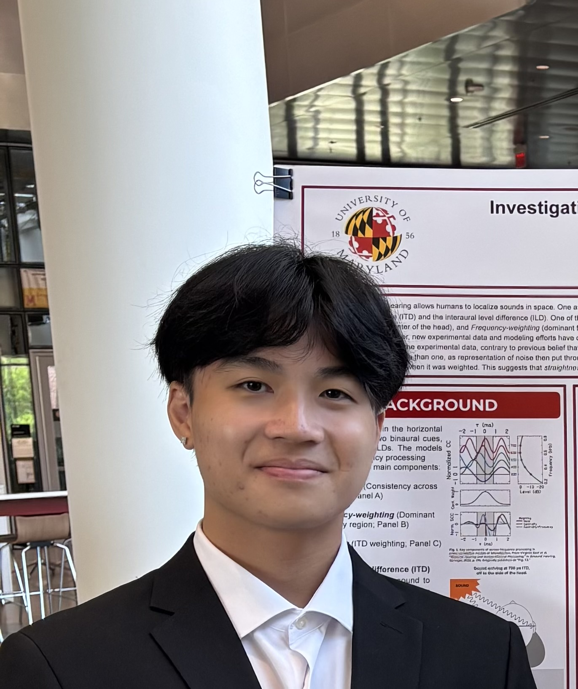

Open to opportunities
Hi, I'm Kiet.
I build things for the
love of it.
I am a Computer Engineering student at the University of Maryland with 6+ years of programming and engineering experience, working in project teams developing software and delivering technical presentation.
Motivated, Curious, Resilient, & Ambitious
About me
My research interests are in interest in embedded systems, low-level computer architecture and cybersecurity. I also am branching into applied physics in biomedical and machine learning.
My background in computer science and computer engineering, combined with my experience leading technical projects, has provided me with a strong foundation in software development, systems engineering, and collaborative problem solving. Through academic and project-based experiences, I have developed the ability to apply technical knowledge to complex problems while communicating effectively and coordinating with team members to develop reliable solutions. I continue to strengthen these skills through hands-on engineering projects and academic work, with the goal of becoming a well-rounded computer engineer capable of contributing to both technical development and research.